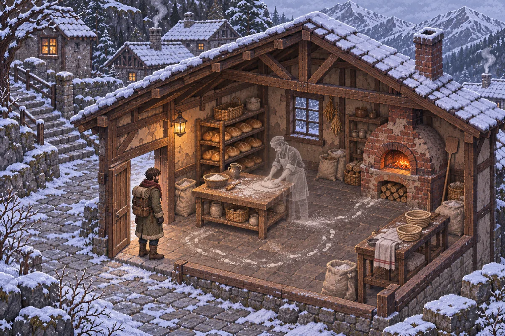

사라진 주민의 일과를 빌려 겨울을 나는 산골 생존 게임 기획
빈 빵집에 저녁 종이 울린다. 화덕 문이 열리고 긴 나무 주걱이 작업대를 툭, 툭 친다. 밀가루 자국은 동그랗게 세 군데 남았다. 어제는 저 광경을 구경하다가 빈 화덕이 식는 것까지 지켜봤다. 오늘은 우물물을 길어 반죽을 세 덩이 올려 둔다. 주걱이 세 번째 빵을 꺼낼 때까지 기다릴까. 벌써 나루에서 사공의 놋종이 울린다.

좀보이드의 결혼식과 산골 빵집의 공통점
프로젝트 좀보이드의 빌드 41에는 교회의 결혼식 차림 신랑·신부, 식당 주방의 요리사처럼 장소에 맞는 복장과 소지품을 가진 좀비가 등장한다. 도로 사고와 봉쇄 현장도 무작위로 놓인다. 무엇을 가지러 왔을지 짐작하게 하는 옷차림과 지나가려던 길을 막는 차체가 한 화면에 공존한다. 개발진은 이 빌드에서 실내를 보여 주는 벽 단면 시야와 바닥에 놓을 수 있는 3D 물건도 소개했다. The Indie Stone의 빌드 41 출시 기록
공식 게임 소개에서 생존자는 등각 시점의 켄터키를 돌아다니며 식량을 찾고, 물건을 만들고, 머물 곳과 방어 시설을 짓는다. 기술은 실제로 그 행동을 하면서 늘고, 권태와 우울도 돌봐야 한다. 그래서 빵집을 발견한 사건은 한 번의 수색으로도, 오래 머물며 익힐 일의 시작으로도 읽을 수 있다. The Indie Stone의 게임 소개
개발사의 상점 설명에는 낮이 저물고 겨울이 다가오는 시간 속에서 농사, 낚시, 목공, 조리를 익히는 과정이 나온다. 이 산골 기획은 그중 계절을 앞질러 준비해야 하는 생활과 사물을 보고 사연을 짐작하는 방식을 가져온다. 아래에서 제안하는 마을에서는 그 사연을 알아내면 다음 저녁에 쓸 수 있는 화덕이나 배가 하나 생긴다. 프로젝트 좀보이드 Steam 게임 설명
빈집은 하루치 일만 기억한다
가을 장날, 고개 너머로 소금을 사러 갔던 짐꾼이 돌아와 보니 마을 사람들만 사라졌다. 저녁이면 사공이 앉던 자리의 방석이 꺼지고, 재봉틀 발판이 오르내린다. 이곳에 남은 것은 주민들이 사라지기 전날 되풀이하던 동작이다. 짐꾼은 이들의 손을 빌려 첫겨울을 난다.
- 낮에 알아낸다. 빵집 장부에는 빵을 받아 간 집의 표식이 있다. 받는 집에는 같은 표식이 찍힌 천과 오래 눌린 빵 자국이 남아 있다. 단서가 있는 서랍을 꺼내 살피거나 그 집까지 직접 걸어가야 두 기록을 맞출 수 있다.
- 해 질 무렵 한 동작을 채운다. 일과는 실제 도구로 정해진 순서대로 진행된다. 사공은 저녁 빵을 받던 난간에서 손을 펴고 잠시 기다린다. 그 자리에 빵을 올려 두면 손자국이 빵을 집고 배의 걸쇠가 풀린다. 미리 두고 가도 된다. 그날 해가 질 때까지 빵이 없으면 걸쇠는 그대로다.
- 쓰인 것은 줄어든다. 어제의 동작은 다음 저녁에 돌아와도 밀가루, 장작, 옷감은 돌아오지 않는다. 재료가 없으면 주걱은 빈 화덕을 열고 닫는다. 플레이어가 아침부터 손수 구울 수도 있다. 익숙하지 않은 반죽을 돌보는 동안 다른 집을 조사할 시간이 줄어든다.
짐을 꾸려 밖에 나가면 시간은 실시간으로 흐른다. 감자를 삶아 그 자리에서 먹고, 물통을 들고 비탈을 오르고, 집 안에서 삐걱대는 덧문 경첩을 고친 뒤 젖은 양말을 벗고 잠든다. 물통과 장작 바구니를 함께 들면 등불을 걸 손이 없다. 탐내던 물건을 담장 옆에 내려놓고 이튿날 빈손으로 가지러 오는 일도 마을 지도를 외우는 계기가 된다.
두 번의 첫눈
첫 번째 겨울에는 강을 건넌다
장부의 배 그림 옆에 날마다 빵 한 개가 적혀 있다. 나루 난간의 둥근 자국도 같은 크기다. 첫날에는 구운 빵을 나룻배 좌석에 놓고 기다린다. 난간만 두드리던 손자국이 사라지고 배는 떠나지 않는다. 빵을 도로 챙겨 먹을 수는 있다. 이제 정확한 자리를 안다. 다음 날에는 일찍 구워 난간에 올리고 손수레를 싣는다. 저녁 왕복 한 차례, 건너편 제재소에서 널판을 가져와 빵집 뒤의 다락 지붕을 고친다. 첫눈이 오면 장작을 눈 속에서 파낼 필요가 없다.
두 번째 겨울에는 나루터를 지나친다
이번 장부에는 배 그림 자리에 가위가 그려져 있다. 나루에는 손바닥 모양만 한 빈 기름병이 매달려 있다. 첫 회차처럼 빵을 들고 나루로 달리기 전에 재봉집에 들른다. 빵을 싸던 천의 가위 자국, 작업대 위에 고정된 소맷단, 의자 밑의 왼쪽 장화를 본다. 빵과 해진 외투를 두고 저녁에 돌아오니 재봉틀이 소맷단을 누비고 있다. 실과 헌 천은 내가 마련해야 한다. 다음 날에는 기름을 찾아 강을 건너는 대신 그 외투를 입고 산비탈의 빈 사냥막까지 오른다. 그곳의 널판으로 지붕을 고치면 제재소를 한 번도 쓰지 않고 겨울을 맞을 수 있다.
강과 제재소는 두 회차 모두 같은 곳에 있다. 바뀌는 것은 전날 누가 누구와 거래했는지, 어디까지 일하다 자리를 떴는지, 어느 날 첫눈이 오는지다. 장부의 표식, 받는 집의 자국, 저녁 손동작은 거래 한 건에서 함께 만든다. 첫 회차에 배운 ‘기다리는 손이 어디를 향하나’는 두 번째 회차에도 통한다. 집 두 곳의 일과를 파악하면 먼저 한 집에 재료를 올려 두고 다른 집 일을 보러 갈 수 있어, 아는 절차를 매일 곁에서 지켜볼 필요도 줄어든다.
눈이 쌓이기까지 남겨 둘 것
첫 주에는 눈 감고도 우물까지 갈 길과 몸을 말릴 침상 하나면 된다. 빵집에 남을 사람은 다락 지붕을 고치고, 나룻배를 쓰는 사람은 부두의 헛간에 여벌 옷부터 둔다. 늦가을에는 얼음이 강기슭을 따라 넓어지면서 배로 실을 수 있는 날이 줄어든다. 마지막 왕복에 널판 한 짐을 실을지, 밀가루를 실을지 정한다. 한겨울에는 눈이 사흘째 문지방 위에 쌓인 아침이 온다. 그동안 집 안에 들여놓은 장작과 식량으로 버티고, 해빙 뒤 처음 장이 서던 날에 고갯길로 떠나면 한 생활을 마친다. 그대로 남아 어느 빈집에 다시 연기가 오르게 할지도 정할 수 있다.
추위와 허기로 짐꾼이 죽으면 같은 산길에 다음 행인이 도착하도록 이어 할 수 있다. 밤새 식은 화덕과 수리한 지붕, 담장 곁에 둔 짐은 그 자리에 있다. 남겨 둔 수첩을 발견하면 빵 받는 집도 알 수 있다. 다만 반죽이 얼마나 부풀었을 때 넣는지 몸으로 익힌 솜씨는 새 인물이 다시 연습한다. 처음부터 다른 마을의 거래 관계를 만나고 싶으면 새 겨울을 시작한다.
그림과 소리로 읽는 빈자리
등각 타일 위에 낮은 돌담과 비스듬한 처마를 쌓는다. 문턱을 넘으면 가까운 벽이 낮아져 자루에서 작업대, 화덕까지 이어진 밀가루 발자국이 한눈에 들어온다. 닫힌 옆방은 가려 둔다. 멈춘 발판은 페달의 흰 뒤축 자국으로, 움직이는 발판은 들썩이는 실타래 그림자로 구별한다. 화덕의 첫 두드림은 주걱이 장작을 당기는 소리이고, 둘째 두드림 때는 화덕 문이 열린다. 소리를 끄더라도 화면에서 두 동작과 그 사이의 기다림을 읽을 수 있다.
처음 만들고 확인할 저녁 두 번
빵집, 재봉집, 나루와 강 건너 창고만 있는 작은 지도로 시작한다. 첫날 아침에 반죽과 먹을 감자 한 알을 주고 저녁 두 번을 관찰한다. 플레이어가 빵을 어디에 둘지 정한 순간 어떤 흔적을 봤는지 듣는다. 틀린 자리에 놓은 사람도 다음 저녁 전에 스스로 옮길 근거를 찾았는지, 배를 놓친 날에 귀가해 먹고 잘 수 있었는지 확인한다. 두 번째 판에서는 장부의 거래 상대만 바꾼다. 어제의 답을 외운 사람이 장부를 다시 펴 보고 자기 계획을 고쳐 쓰는 순간이 이 시제품의 통과 기준이다.
콘셉트 아트 생성 프롬프트
stylized-concept. Wide landscape 3:2 original game scene under a single fixed 3/4 isometric orthographic camera. First snow in a quiet empty mountain village. A wooden bakery with two walls cut away opens onto a snowy stone lane, a few roofs behind. A worn brick wood-fired oven with faint orange glow, kneading table and flour-strewn flagstone floor. One distinctly solid resident traveler in a wool coat at the door watching ONE faded, translucent grey echo of a baker kneading dough; subtle pale flour footprints describe the baker’s repeated route from table to oven. Warm interior and cold exterior both clear. Gritty detailed pixel-art tiles, crisp hard-edged clusters, survivor and baker at normal human scale, unromantic and quiet, full-bleed playable game scene. No HUD, lettering, labels, game title, signage, logo, or watermark.